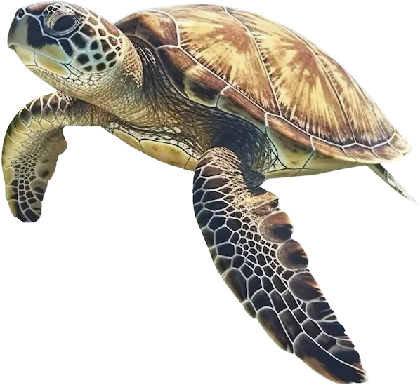

<!doctype html>
<html lang="sv">
<head>
<meta charset="utf-8">
<meta name="viewport" content="width=device-width,initial-scale=1">
<meta name="theme-color" content="#5B6CFF">
<meta name="robots" content="noindex">
<title>Poängjakten</title>
<link rel="preconnect" href="https://fonts.googleapis.com">
<link rel="preconnect" href="https://fonts.gstatic.com" crossorigin>
<link rel="stylesheet" href="https://fonts.googleapis.com/css2?family=Archivo:wdth,wght@110,900&family=Nunito:wght@600;800&display=swap">
<style>
  :root{
    --blue:#5B6CFF; --yellow:#FFD23F; --green:#1ED27E; --coral:#FF6A57; --pink:#FFB6DC; --mint:#B9F1D6;
    --ink:#111111;
    --display:"Archivo","Arial Black",Impact,sans-serif;
    --body:"Nunito","Trebuchet MS",sans-serif;
  }
  *{box-sizing:border-box}
  html{background:#cfe0ff}
  body{
    margin:0;min-height:100vh;color:var(--ink);font-family:var(--body);font-weight:600;font-size:17px;line-height:1.4;
    background:linear-gradient(160deg,#c9dcff 0%,#e6d9ff 55%,#ffd9ec 100%);
    -webkit-text-size-adjust:100%;
  }
  .wrap{max-width:30rem;margin:0 auto;padding:1rem .9rem 3rem;display:flex;flex-direction:column;gap:.75rem}

  .block{position:relative;border-radius:22px;padding:1.2rem 1.15rem;overflow:hidden;color:var(--ink)}
  .blue{background:var(--blue)} .yellow{background:var(--yellow)} .green{background:var(--green)}
  .coral{background:var(--coral)} .pink{background:var(--pink)} .mint{background:var(--mint)} .ink{background:var(--ink);color:#fff}

  .eyebrow{font-weight:800;font-size:.72rem;letter-spacing:.22em;text-transform:uppercase;margin:0 0 .35rem}
  h1,h2{font-family:var(--display);font-weight:900;letter-spacing:-.03em;line-height:.92;margin:0;text-wrap:balance}
  h1{font-size:clamp(2.6rem,13vw,3.9rem)} h2{font-size:1.7rem;line-height:1.05}
  p{margin:.5rem 0 0}
  img.djur{position:absolute;pointer-events:none;user-select:none;-webkit-user-drag:none;filter:drop-shadow(0 10px 14px rgba(0,0,0,.22))}
  @media (prefers-reduced-motion:no-preference){
    img.djur{animation:sim 5s ease-in-out infinite}
    @keyframes sim{50%{transform:translateY(-7px) rotate(-2deg)}}
  }

  .badge{
    display:grid;place-items:center;flex:0 0 auto;width:8.6rem;height:8.6rem;border-radius:50%;
    background:var(--green);color:var(--ink);transform:rotate(-7deg);
    font-family:var(--display);font-weight:900;font-size:4.3rem;letter-spacing:-.05em;line-height:1;
    box-shadow:0 8px 0 rgba(0,0,0,.18);font-variant-numeric:tabular-nums;
  }
  .badge small{font-family:var(--body);font-weight:800;font-size:.7rem;letter-spacing:.2em;text-transform:uppercase;margin-bottom:-.6rem}

  /* Uppgiftskort */
  .kort{display:flex;flex-direction:column;gap:.75rem}
  .uppg{min-height:9.5rem;padding-right:7rem}
  .uppg.med{padding-right:1.15rem}
  .lvl{display:flex;align-items:center;gap:.4rem;font-weight:800;font-size:.72rem;letter-spacing:.18em;text-transform:uppercase;margin-bottom:.45rem}
  .lvl span{background:var(--ink);color:#fff;border-radius:99px;padding:.2rem .6rem}
  .txt{font-family:var(--display);font-weight:900;font-size:1.32rem;line-height:1.14;letter-spacing:-.015em;margin:0;text-wrap:balance}
  .uppg img.djur{right:-.6rem;bottom:-.4rem;width:7.2rem;max-height:8rem;object-fit:contain}
  .uppg.d1 img.djur{width:6.4rem;right:-.2rem;bottom:-.3rem}
  .uppg.d4 img.djur{width:4.4rem;right:1rem;bottom:-1rem}

  /* 1X2 */
  .alt{list-style:none;padding:0;margin:.8rem 0 0;display:flex;flex-direction:column;gap:.4rem}
  .alt li{display:flex;align-items:center;gap:.7rem;background:rgba(255,255,255,.55);border-radius:12px;padding:.5rem .7rem;font-weight:800}
  .alt b{flex:0 0 1.8rem;height:1.8rem;border-radius:50%;background:var(--ink);color:#fff;display:grid;place-items:center;font-family:var(--display);font-size:.95rem}

  /* Gissa-bild under en levande vattenyta */
  .gissa{margin:.8rem 0 0;border-radius:14px;overflow:hidden;background:#0d3b6e;aspect-ratio:4/3;position:relative}
  .gissa svg{display:block;width:100%;height:100%}
  .gissa::after{content:"";position:absolute;inset:0;pointer-events:none;
    background:radial-gradient(120% 70% at 30% 0%,rgba(190,235,255,.35),transparent 60%),
               linear-gradient(180deg,rgba(60,170,255,.22),rgba(0,50,110,.45));
    mix-blend-mode:screen}

  .btn{
    display:block;width:100%;border:0;border-radius:99px;padding:1.05rem 1.2rem;cursor:pointer;
    font-family:var(--display);font-weight:900;font-size:1.25rem;letter-spacing:-.01em;
    background:var(--ink);color:var(--yellow);box-shadow:0 6px 0 rgba(0,0,0,.25);
  }
  .btn:active{transform:translateY(3px);box-shadow:0 3px 0 rgba(0,0,0,.25)}
  .btn:disabled{opacity:.35;box-shadow:none;cursor:not-allowed}
  .lank{background:none;border:0;padding:.4rem 0;cursor:pointer;font-family:var(--body);font-weight:800;font-size:.95rem;color:var(--ink);text-decoration:underline;text-underline-offset:3px;text-decoration-thickness:2px}
  :focus-visible{outline:3px solid var(--ink);outline-offset:3px}

  /* Lagval: kryss i / kryss ur */
  .rad{display:flex;align-items:center;gap:.8rem;min-height:5.4rem;padding:.8rem 1rem;width:100%;border:0;text-align:left;cursor:pointer;font:inherit;color:var(--ink);transition:transform .12s}
  .rad:active{transform:scale(.985)}
  .rad .vem{font-family:var(--display);font-weight:900;font-size:1.35rem;letter-spacing:-.02em;line-height:1;flex:1}
  .rad .vem small{display:block;font-family:var(--body);font-weight:800;font-size:.7rem;letter-spacing:.18em;text-transform:uppercase;margin-bottom:.3rem}
  .rad img.djur{position:static;width:3.9rem;height:3.9rem;object-fit:contain}
  .kryss{flex:0 0 2.6rem;width:2.6rem;height:2.6rem;border-radius:50%;border:3px solid var(--ink);display:grid;place-items:center;background:rgba(255,255,255,.5)}
  .kryss svg{width:1.4rem;height:1.4rem;opacity:0;transform:scale(.5);transition:all .15s}
  .rad[aria-pressed="true"] .kryss{background:var(--ink)}
  .rad[aria-pressed="true"] .kryss svg{opacity:1;transform:scale(1)}
  .rad[aria-pressed="false"]{opacity:.62;filter:saturate(.6)}
  .rad[aria-pressed="false"] img.djur{filter:grayscale(.6) drop-shadow(0 4px 6px rgba(0,0,0,.15))}

  .hem{min-height:22rem;display:flex;flex-direction:column;justify-content:flex-end;padding-top:1.4rem}
  .hem img.djur{right:-1.4rem;top:-.4rem;width:14rem;transform:rotate(-8deg)}
  .hem h1{position:relative;max-width:7.5em}
  .chips{display:flex;flex-wrap:wrap;gap:.35rem;margin-top:.6rem}
  .chips span{background:var(--ink);color:#fff;border-radius:99px;padding:.3rem .7rem;font-size:.8rem;font-weight:800}
  .stim{display:flex;justify-content:space-between;align-items:center;gap:1rem}
  .stim img{width:4.2rem;height:4.2rem;opacity:.85}
</style>
</head>
<body>
<svg width="0" height="0" style="position:absolute" aria-hidden="true">
  <filter id="vatten-mild" x="-5%" y="-5%" width="110%" height="110%" color-interpolation-filters="sRGB">
    <feTurbulence type="fractalNoise" baseFrequency="0.01 0.028" numOctaves="2" seed="2" result="brus">
      <animate attributeName="baseFrequency" dur="9s" values="0.01 0.028;0.014 0.036;0.01 0.028" repeatCount="indefinite"/>
    </feTurbulence>
    <feDisplacementMap in="SourceGraphic" in2="brus" scale="10" xChannelSelector="R" yChannelSelector="G">
      <animate attributeName="scale" dur="5s" values="7;13;7" repeatCount="indefinite"/>
    </feDisplacementMap>
  </filter>
  <filter id="vatten" x="-8%" y="-8%" width="116%" height="116%" color-interpolation-filters="sRGB">
    <feTurbulence type="fractalNoise" baseFrequency="0.011 0.03" numOctaves="2" seed="4" result="brus">
      <animate attributeName="baseFrequency" dur="8s" values="0.011 0.03;0.016 0.042;0.011 0.03" repeatCount="indefinite"/>
    </feTurbulence>
    <feDisplacementMap in="SourceGraphic" in2="brus" scale="30" xChannelSelector="R" yChannelSelector="G">
      <animate attributeName="scale" dur="5s" values="24;36;24" repeatCount="indefinite"/>
    </feDisplacementMap>
    <feGaussianBlur stdDeviation="0.5"/>
  </filter>
  <filter id="vatten-stark" x="-8%" y="-8%" width="116%" height="116%" color-interpolation-filters="sRGB">
    <feTurbulence type="fractalNoise" baseFrequency="0.009 0.026" numOctaves="3" seed="9" result="brus">
      <animate attributeName="baseFrequency" dur="7s" values="0.009 0.026;0.014 0.038;0.009 0.026" repeatCount="indefinite"/>
    </feTurbulence>
    <feDisplacementMap in="SourceGraphic" in2="brus" scale="48" xChannelSelector="R" yChannelSelector="G">
      <animate attributeName="scale" dur="4.5s" values="40;58;40" repeatCount="indefinite"/>
    </feDisplacementMap>
    <feGaussianBlur stdDeviation="0.8"/>
  </filter>
</svg>
<div class="wrap" id="app"></div>

<script>
var D = [null,[{"q":"Simma med armarna som en fisk"},{"q":"Vad heter den lilla sjöjungfrun?"},{"q":"Vad heter Nemos pappa?"},{"q":"Hur stor del av jordens yta täcker Stilla havet?","alt":["Cirka 15 %","Cirka 30 %","Cirka 50 %"]}],[{"q":"Blås bubblor med munnen"},{"q":"Vad heter djuret som ser ut som en häst och bor i havet?"},{"q":"Vilket djur är störst i hela världen?"},{"q":"Hur många hjärtan har en bläckfisk?","alt":["Ett","Två","Tre"]}],[{"q":"Klappa händerna som en säl"},{"q":"Vilket djur bär sitt hus på ryggen och kan simma?"},{"q":"Vad andas fiskar med?"},{"q":"Vilket årtionde sjönk Titanic?"}],[{"q":"Gör en fiskmun"},{"q":"Vad har pirater för sig på ögat?"},{"q":"Vilket hav ligger öster om Sverige?"},{"q":"Ungefär hur många öar har Stockholms skärgård?","alt":["3 000","10 000","30 000"]}],[{"q":"Hoppa tre gånger som en delfin"},{"q":"Vad heter huset där man tittar på fiskar?"},{"q":"Vad heter Sveriges största sjö?"},{"q":"Vilken färg har bläckfiskens blod?","alt":["Rött","Blått","Grönt"]}],[{"q":"Kan en haj flyga?"},{"q":"Vilken färg har en kokt hummer?"},{"q":"Kan en sjöstjärna få tillbaka en avbruten arm?"},{"q":"Hur gammal kan en grönlandshaj bli?","alt":["80 år","150 år","400 år"]}],[{"q":"Vifta med armarna som en manet"},{"q":"Hur många armar har en bläckfisk?"},{"q":"Vad heter världens djupaste plats i havet?"},{"q":"Vad kallas ett fartygs vänstra sida?"}],[{"q":"Säg PLASK så högt du kan"},{"q":"Vad heter den här fisken?","bild":"img/doris.webp","fyll":1,"styrka":"mild"},{"q":"Hur många ben har en krabba, klorna inräknade?"},{"q":"Vad heter Jacques Cousteaus berömda forskningsfartyg?"}],[{"q":"Hitta något blått"},{"q":"Vad heter fisken som blåser upp sig som en boll?"},{"q":"Vad heter det när havet stiger och sjunker vid kusten?"},{"q":"Vilken är världens giftigaste manet?"}],[{"q":"Vinka med alla fingrar som en bläckfisk"},{"q":"Vilket djur klipper med klorna?"},{"q":"Vad heter det svenska regalskepp som sjönk 1628?"},{"q":"Hur länge låg Vasa på botten innan hon bärgades?","alt":["133 år","233 år","333 år"]}],[{"q":"Låt som en val: huuuuu"},{"q":"Vad har man på fötterna när man dyker?"},{"q":"Vilken fisk kan ge elektriska stötar?"},{"q":"Vad heter världens största fisk?"}],[{"q":"Snurra runt ett varv"},{"q":"Vad heter det stora skeppet som sjönk och blev film?"},{"q":"Vad heter kaptenen i Jules Vernes bok om ubåten?"},{"q":"Hur fort är en knop?","alt":["1 km/h","1,85 km/h","2,5 km/h"]}],[{"q":"Håll för näsan och huka dig — dyk!"},{"q":"Hela laget: gör vågen tillsammans, tre gånger"},{"q":"Kan hajar simma baklänges?"},{"q":"Vilket djur bär en sten under armen för att knäcka musslor?"}],[{"q":"Hitta en sten"},{"q":"Vilket djur sprutar vatten ur huvudet?"},{"q":"Vad heter världens största korallrev?"},{"q":"Vad heter Sveriges djupaste sjö?","alt":["Vättern","Hornavan","Torneträsk"]}],[{"q":"Stampa som en glad pingvin"},{"q":"Vad heter Svampbobs bästa kompis?"},{"q":"Vad kallas ett djur som kan leva både i vatten och på land?"},{"q":"Hur många kammare har ett fiskhjärta?","alt":["En","Två","Fyra"]}],[{"q":"Öppna och stäng munnen fem gånger som en fisk"},{"q":"Vad heter Ariels pappa?"},{"q":"Vad heter Sveriges största ö?"},{"q":"Vilket land äter mest fisk per person?","alt":["Japan","Island","Norge"]}],[{"q":"Gör dig så liten som en räka"},{"q":"Vem gömmer sig under ytan?","bild":"img/sommarskuggan.webp","fyll":1,"styrka":"mellan"},{"q":"Vad använder delfiner och fladdermöss för att hitta i mörker?"},{"q":"Hur djupt är Östersjön som djupast?","alt":["159 meter","459 meter","859 meter"]}],[{"q":"Gör dig så stor som en haj"},{"q":"Vad heter det när man håller andan och simmar under vattnet?"},{"q":"Vad heter isen som flyter omkring i havet?"},{"q":"Vad står SOS för?"}],[{"q":"Hitta något grönt"},{"q":"Har delfinen päls eller slät hud?"},{"q":"Vad heter det när vatten blir till ånga?"},{"q":"Hur lång tid tar det för en plastpåse att brytas ned i havet?","alt":["Cirka 5 år","Cirka 50 år","Flera hundra år"]}],[{"q":"Räck upp båda armarna som en sjöstjärna"},{"q":"Vad heter valens bebis?"},{"q":"Vad heter Sveriges längsta bro?"},{"q":"Vilken kroppsdel använder hajen för att känna elektriska fält?"}],[{"q":"Vagga fram och tillbaka som en sjöhäst"},{"q":"Vad heter Ariels fiskkompis?"},{"q":"Vilket hav ligger mellan Europa och Afrika?"},{"q":"Hur många världshav finns det officiellt?","alt":["Tre","Fem","Sju"]}],[{"q":"Låt som en motorbåt: brrrrr"},{"q":"Vad kallas det när många fiskar simmar tillsammans?"},{"q":"Vad kallas en erfaren gammal sjöman?"},{"q":"Hur djup är Marianergraven?","alt":["Cirka 6 km","Cirka 11 km","Cirka 20 km"]}],[{"q":"Ta någon i handen och skratta högt"},{"q":"Vilket djur har taggar överallt och bor i havet?"},{"q":"Vilket vatten är så salt att man flyter av sig själv?"},{"q":"Hur stor del av jordens yta täcks av vatten?","alt":["50 %","70 %","90 %"]}],[{"q":"Gå på tå, tyst som en haj"},{"q":"Vad heter det när vattnet går upp och ner på havet?"},{"q":"Vad heter havets gud i grekisk mytologi?"},{"q":"Vad heter Poseidons romerska motsvarighet?"}],[{"q":"Hitta något gult"},{"q":"Vad heter krabban i Den lilla sjöjungfrun?"},{"q":"Hur många liter vatten går det på en kubikmeter?"},{"q":"Vilket djur har världens största ögon?"}],[{"q":"Peka på din näsa"},{"q":"Vad heter Svampbobs sura granne som är en bläckfisk?"},{"q":"Vad kallas golvet man står på ombord på ett fartyg?"},{"q":"Hur mycket väger en liter havsvatten?","alt":["0,9 kg","1,03 kg","1,3 kg"]}],[{"q":"Ge alla i laget en high five"},{"q":"Vad har man runt magen eller armarna för att flyta?"},{"q":"Vad heter det när ett fartyg sjunker?"},{"q":"Vilken är världens längsta flod?","alt":["Nilen","Amazonas","Yangtze"]}],[{"q":"Låt som en mås"},{"q":"Bor pingviner där det är varmt eller kallt?"},{"q":"Vad heter delfinens andningshål på huvudet?"},{"q":"Hur många tänder byter en haj under sitt liv?","alt":["Cirka 300","Cirka 3 000","Cirka 30 000"]}],[{"q":"Blinka med ena ögat"},{"q":"Hur många armar har en sjöstjärna?"},{"q":"Vad kallas det när man fiskar med stora nät från en båt?"},{"q":"Hur djupt kan en kejsarpingvin dyka?","alt":["50 meter","500 meter","2 000 meter"]}],[{"q":"Hoppa på ett ben tre gånger"},{"q":"Vilket djur är störst: en delfin eller en val?"},{"q":"Vilket är världens snabbaste havsdjur?"},{"q":"Vilket år invigdes Öresundsbron?","alt":["1995","2000","2005"]}],[{"q":"Krama någon i laget"},{"q":"Vad har man för ögonen för att se under vattnet?"},{"q":"Vilken svensk fisk luktar så illa att man öppnar burken utomhus?"},{"q":"Vilken är Sveriges näst största ö?"}],[{"q":"Gäspa så stort du kan"},{"q":"Vad letar pirater efter?"},{"q":"Vad krockade Titanic med?"},{"q":"Hur många OS-guld har Sarah Sjöström?","alt":["Ett","Tre","Fem"]}],[{"q":"Rulla armarna som en våg"},{"q":"Vilken färg har Nemo?"},{"q":"Hur många världshav brukar man säga att det finns?"},{"q":"Vad betyder ordet tsunami på japanska?"}],[{"q":"Viska ordet hemligt"},{"q":"Vad heter det när det regnar så mycket att vattnet stiger över gatorna?"},{"q":"Vem gömmer sig under ytan?","bild":"img/kandis2.webp","fyll":1,"styrka":"mellan"},{"q":"Vad heter sundet som skiljer Europa från Afrika?"}],[{"q":"Hitta något mjukt"},{"q":"Vad heter det här djuret?","bild":"img/axolotl-foto.webp","fyll":1,"styrka":"mild"},{"q":"Vad är den kemiska beteckningen för vatten?"},{"q":"I vilket land bor det här djuret i det vilda?","bild":"img/axolotl-foto.webp","fyll":1,"styrka":"mild"}],[{"q":"Gunga fram och tillbaka som en båt"},{"q":"Sover fiskar?"},{"q":"Vilket djur gömmer sig under ytan?","bild":"img/skoldpadda.webp"},{"q":"Vem skrev Den gamle och havet?"}],[{"q":"Räck ut tungan"},{"q":"Vad äter en guldfisk?"},{"q":"Vilket djur gömmer sig under ytan?","bild":"img/manet.webp"},{"q":"Vem regisserade filmen Hajen?"}],[{"q":"Applådera dig själv"},{"q":"Vad heter djuret som är genomskinligt och kan bränna dig i havet?"},{"q":"Vilken fågel kan dyka djupast?"},{"q":"Vad heter kaptenen som jagar Moby Dick?"}],[{"q":"Nicka ja tre gånger"},{"q":"Vad heter det stora vita djuret som simmar bland isen?"},{"q":"Vad heter ämnet som gör havet salt?"},{"q":"Vad heter ubåten i Jules Vernes roman?"}],[{"q":"Hitta ett löv"},{"q":"Vad heter den rosa fågeln som står på ett ben i vattnet?"},{"q":"Vilken svensk simmare tog OS-guld 2024?"},{"q":"Vem ledde Kon-Tiki-expeditionen över Stilla havet?"}],[{"q":"Sträck ut armarna som fenor och glid"},{"q":"Vad kallas det när man hoppar i med benen ihop och gör ett jättestort plask?"},{"q":"Hur stor del av jorden täcks av vatten, ungefär?"},{"q":"Vilken film är det här?","bild":"img/film1.webp","fyll":1,"styrka":"mellan"}],[{"q":"Hitta något runt"},{"q":"Vilket djur bygger dammar i vattnet?"},{"q":"Vad heter det när isen på sjön smälter och spricker upp på våren?"},{"q":"Hur stor del av jordens vatten är sötvatten?","alt":["Cirka 3 %","Cirka 15 %","Cirka 30 %"]}],[{"q":"Gör en grimas"},{"q":"Vad heter grodans bebisar?"},{"q":"Vilket djur är närmast släkt med valen: hästen, flodhästen eller elefanten?"},{"q":"Vilken är Sveriges längsta älv?","alt":["Klarälven","Torne älv","Dalälven"]}],[{"q":"Vinka hej då till en fisk"},{"q":"Hela laget: gör en fiskdans i tio sekunder"},{"q":"Vad heter världens största sjö?"},{"q":"Vilken kändis gömmer sig under ytan?","bild":"img/kandis1.webp","fyll":1,"styrka":"stark"}],[{"q":"Klappa i händerna tre gånger"},{"q":"Vilken fisk gömmer sig under ytan?","bild":"img/guldfisk.webp"},{"q":"Vilken planet kallas den blå planeten?"},{"q":"🎬 Vilken film? 🚣🐅🌊"}],[{"q":"Bor fisken i vattnet eller i ett träd?"},{"q":"Hela laget: sjung en låt som handlar om vatten eller hav"},{"q":"Vad heter kanalen som förbinder Medelhavet med Röda havet?"},{"q":"Vilken fisk gömmer sig under ytan?","bild":"img/makrill.webp"}],[{"q":"Trampa vatten på stället"},{"q":"Vad kan man bygga av sand på stranden?"},{"q":"Vad heter en båt med två skrov?"},{"q":"🎬 Vilken film? 🏴‍☠️💀⚓ (Johnny Depp, 2003)"}],[{"q":"Hitta något som luktar"},{"q":"Vad heter det när man står på en bräda och åker på vågorna?"},{"q":"Vilken stad kallas Nordens Venedig?"},{"q":"Vad kallas fartygets högra sida?"}],[{"q":"Vilken färg är havet?"},{"q":"Vad heter sjörövare med ett annat ord?"},{"q":"Vad heter fisken som kan blåsa upp sig till en boll?"},{"q":"🎬 Vilken film? 🐟🌊🎣👴 (Hemingway)"}],[{"q":"Räck upp armarna och ropa HURRA"},{"q":"Hela laget: ropa ett trefaldigt leve för havet"},{"q":"Vilken rovfågel dyker ner i vattnet med klorna först för att fånga fisk?"},{"q":"Sista rutan: utbringa en skål — hitta på anledningen själva"}]];
var C = {"w9s6d":1,"42smv":2,"8f4xn":3,"vgxz9":4,"vdccf":5,"fd6jh":6,"r4tps":7,"242ud":8,"ffkts":9,"s7kpz":10,"77ux7":11,"xrk8w":12,"x8ggk":13,"8dvpf":14,"w6xwq":15,"5cdva":16,"ywqqn":17,"j4wrv":18,"3yuhv":19,"n3jsy":20,"nydku":21,"zuuqf":22,"ny2pm":23,"yrgwy":24,"7w82n":25,"f44rw":26,"gpqnv":27,"t4ufm":28,"5jeya":29,"fhjvn":30,"xy5x2":31,"t7pa2":32,"g64mj":33,"bz3vn":34,"ypbyd":35,"br389":36,"cs76b":37,"ezp29":38,"4bkqt":39,"2q254":40,"4e9gb":41,"wwu4f":42,"c3bcr":43,"f4rzu":44,"kshwq":45,"ezjxf":46,"nsuxs":47,"5ds85":48,"mhwky":49,"whcjy":50};
var LVL = [
  {n:"1–3 år",  t:"Uppdrag", farg:"pink",   bild:"img/axolotl.webp",    alt:"Axolotl"},
  {n:"4–7 år",  t:"Fråga",   farg:"yellow", bild:"img/guldfisk.webp",   alt:"Guldfisk"},
  {n:"8–15 år", t:"Fråga",   farg:"mint",   bild:"img/skoldpadda.webp", alt:"Havssköldpadda"},
  {n:"Vuxna",   t:"Fråga",   farg:"blue",   bild:"img/manet.webp",      alt:"Manet"}
];
var KEY = "poangjakt-lag-v2", minne = null, utkast = null, aktuell = null;
var app = document.getElementById("app");

function lasLag(){ try{ var v = JSON.parse(localStorage.getItem(KEY)); if(v && v.length===4 && v.some(Boolean)) return v; }catch(e){} return minne; }
function sparaLag(v){ minne = v; try{ localStorage.setItem(KEY, JSON.stringify(v)); }catch(e){} }
function esc(s){ return s.replace(/&/g,"&amp;").replace(/</g,"&lt;"); }
function chips(v){ var h='<div class="chips">'; for(var i=0;i<4;i++) if(v[i]) h+='<span>'+LVL[i].n+'</span>'; return h+'</div>'; }
function djur(i){ return ''; }
var BOCK = '<svg viewBox="0 0 24 24" fill="none" stroke="#fff" stroke-width="3.5" stroke-linecap="round" stroke-linejoin="round"><path d="M4 12.5l5 5L20 6.5"/></svg>';

function gissa(u){
  var slice = u.fyll ? 'xMidYMid slice' : 'xMidYMid meet';
  var f = {mild:'vatten-mild', stark:'vatten-stark'}[u.styrka] || 'vatten';
  return '<div class="gissa"><svg viewBox="0 0 400 300" role="img" aria-label="Gissa vem eller vad som gömmer sig under ytan">'
    + '<image href="'+u.bild+'" x="'+(u.fyll?-24:30)+'" y="'+(u.fyll?-18:30)+'" width="'+(u.fyll?448:340)+'" height="'+(u.fyll?336:240)+'" preserveAspectRatio="'+slice+'" filter="url(#'+f+')"/></svg></div>';
}
if(window.matchMedia && matchMedia("(prefers-reduced-motion: reduce)").matches){
  document.querySelectorAll("filter animate").forEach(function(a){ a.remove(); });
}

function lagForm(){
  utkast = (lasLag() || [false,false,false,false]).slice();
  var h = '<div class="block ink"><p class="eyebrow">Poängjakten</p><h1>Vilka åldrar finns i laget?</h1></div>';
  for(var i=0;i<4;i++){
    h += '<button type="button" class="block rad '+LVL[i].farg+'" data-i="'+i+'" aria-pressed="'+utkast[i]+'">'
       +   djur(i) + '<span class="vem"><small>'+LVL[i].t+'</small>'+LVL[i].n+'</span>'
       +   '<span class="kryss">'+BOCK+'</span></button>';
  }
  h += '<button class="btn" id="spara" type="button"'+(utkast.some(Boolean)?'':' disabled')+'>Kör!</button>';
  app.innerHTML = h; window.scrollTo(0,0);
}

function uppgift(i, u){
  var med = u.alt || u.bild;
  var h = '<div class="block uppg d'+(i+1)+' '+LVL[i].farg+(med?' med':'')+'">'
        + '<div class="lvl"><span>'+LVL[i].n+'</span>'+LVL[i].t+'</div>'
        + '<p class="txt">'+esc(u.q)+'</p>';
  if(u.alt){ h += '<ul class="alt">'; ['1','X','2'].forEach(function(k,j){ h += '<li><b>'+k+'</b>'+esc(u.alt[j])+'</li>'; }); h += '</ul>'; }
  if(u.bild){ h += gissa(u); }
  if(!med) h += djur(i);
  return h + '</div>';
}

function ruta(n){
  var lag = lasLag() || [true,true,true,true];
  var h = '<div class="block yellow" style="display:flex;align-items:center;justify-content:space-between;gap:1rem;min-height:11rem">'
        +   '<div><p class="eyebrow">Ni hittade</p><h2>Ruta '+n+'</h2>'+chips(lag)+'</div>'
        +   '<div class="badge"><small>Ruta</small>'+n+'</div></div><div class="kort">';
  for(var i=0;i<4;i++) if(lag[i]) h += uppgift(i, D[n][i]);
  h += '</div><div class="block green"><h2>Klara? Spring till spelplanen!</h2><p>Berätta svaren för lekledaren. Rätt svar ger ett nytt tärningskast.</p></div>'
     + '<button class="lank" id="andra" type="button">Ändra laget</button>';
  app.innerHTML = h; window.scrollTo(0,0);
}

function hem(okand){
  var lag = lasLag();
  app.innerHTML =
      (okand ? '<div class="block coral"><h2>Hmm, den koden känner jag inte igen.</h2><p>Scanna en gång till, eller visa den för lekledaren.</p></div>' : '')
    + '<div class="block blue hem">'
    +   '<p class="eyebrow">Poängjakten</p><h1>Scanna nästa QR-kod!</h1>'+(lag?chips(lag):'')+'</div>'
    + '<div class="block pink stim"><h2>Slå tärningen. Hitta siffran. Scanna.</h2></div>'
    + '<button class="lank" id="andra" type="button">Ändra laget</button>';
  window.scrollTo(0,0);
}

app.addEventListener("click", function(e){
  var b = e.target.closest("button"); if(!b) return;
  if(b.classList.contains("rad")){
    var i = +b.dataset.i; utkast[i] = !utkast[i];
    b.setAttribute("aria-pressed", utkast[i]);
    document.getElementById("spara").disabled = !utkast.some(Boolean);
  } else if(b.id === "spara"){ sparaLag(utkast.slice()); aktuell ? ruta(aktuell) : hem(false); }
  else if(b.id === "andra"){ lagForm(); }
});

function rita(){
  var k = location.hash.slice(1).toLowerCase();
  aktuell = C[k] || null;
  if(!lasLag()) return lagForm();
  if(aktuell) ruta(aktuell); else hem(k.length > 0);
}
window.addEventListener("hashchange", rita);
rita();
</script>
</body>
</html>
